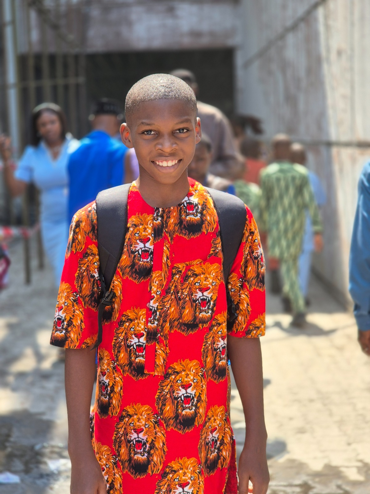

An ambitious SS1 Student and passionate Web Developer based in Rivers State.
Explore My WorldI am currently a Senior Secondary 1 (SS1) student balancing my high school academic goals with learning modern web technologies.
Living in Rivers State, Nigeria, I am inspired by the energy of my local community to build web projects that can make a real impact locally and beyond.
Exploring creative UI designs, experimenting with new JavaScript frameworks, and reading tech blogs to stay ahead of modern web trends.
To master front-end technologies and continuously grow into a full-stack engineer, turning bold creative concepts into fast, responsive websites.